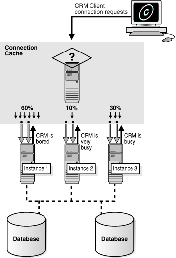

8 Client High Availability with Services, FAN, FCF, and Application Continuity
You can achieve client high availability and scalability in Oracle Real Application Clusters (Oracle RAC) using database services, Fast Application Notification (FAN), Fast Connection Failover (FCF), and Application Continuity. Older applications can use Transparent Application Failover (TAF).
Topics:
- About Continuous Service Availability with Database Services
You can deploy Oracle RAC environments to achieve continuous service in many different ways. - Creating Services
You can create a service using Oracle Enterprise Manager or the SRVCTL utility. - Administering Services
You can create and administer services using Enterprise Manager. You can also use the SRVCTL utility to perform most service management tasks. - Managing Planned Maintenance Without User Interruption
Using a combination of features, you can stop database services or instances with little to no impact to connected sessions. - Configuring Clients for High Availability
There are three central elements to consider when automating failover for application clients.
8.1 About Continuous Service Availability with Database Services
You can deploy Oracle RAC environments to achieve continuous service in many different ways.
Applications using a clustered database generally want to load balance their workload across the cluster. Oracle Real Application Clusters (Oracle RAC) runs on Oracle Clusterware, which provides a highly available (HA) application framework. Oracle Clusterware provides the necessary service and integration points between Oracle RAC and custom enterprise applications using FAN. Across data centers Global Data Services (GDS) also provides these integration points for services and FAN.
Depending on the number of nodes and your environment's complexity and objectives, your choices for the optimal workload management and high availability configuration depend on a variety of considerations.
To implement continuous service for your applications using Oracle RAC database, use the following features:
Topics:
- About Oracle Database Services
Services divide workloads into mutually disjoint groupings. Each service represents a workload with common attributes, service-level thresholds, and priorities. - About the Database Resource Manager
The Database Resource Manager is a database feature you can use to control the database resources allocated to users, applications, and services. - About Oracle RAC High Availability Framework
The Oracle RAC high availability framework enables Oracle RAC to maintain the database, components, and applications in a running state always. - About Fast Application Notification (FAN)
Fast Application Notification (FAN) is a high availability notification mechanism that Oracle RAC uses to notify other processes about cluster configuration and service-level information, including status changes such asUPorDOWNevents. - About FAN Callouts
FAN callouts are server-side executable files that Oracle RAC runs immediately when high availability events occur. - About Application Continuity for Masking Outages
Application Continuity can mask database outages for both planned and unplanned events. - About the Load Balancing Advisory
The Load Balancing Advisory provides information to applications or clients about the current service levels that the Oracle RAC database instances are providing. - About Connection Load Balancing
Oracle Net connection load balancing spreads user connections across all the instances that support the service used to connect to the database. - About Run-time Connection Load Balancing
Run-time Connection Load Balancing is a feature of Oracle connection pools that can distribute client work requests across the instances in an Oracle RAC database based on the Load Balancing Advisory information.
See Also:
8.1.1 About Oracle Database Services
Services divide workloads into mutually disjoint groupings. Each service represents a workload with common attributes, service-level thresholds, and priorities.
Database services, referred to as services, are logical abstractions for managing workloads in Oracle Database. A single service can represent an application, multiple applications or a subset of a single application. For example, the Oracle E-Business suite defines a service for each responsibility, such as general ledger, accounts receivable, order entry, and so on. A service can be active on one or several instances of an Oracle RAC cluster and a single database instance can host multiple services.
Note:
A database service can only be offered on a single network.
Services provide the following benefits:
-
Provide a single entity for managing applications that compete for the same resources
-
Enable each workload to be managed as a unit
-
Hide the complexity of the cluster from the client
You can use services to manage the workload for different types of work. For example, online users can use one service while batch processing can use a different service and reporting can use yet another service type.
Traditionally an Oracle database provided a single service and all users connected to the same service. A database always has this default database service that is the database name. This service cannot be modified. It should only be used for administrative tasks because it always enables you to connect to the database. The default database service should not be used for high availability because it cannot be disabled or relocated. Always use user-defined database services for your applications.
Note:
Do not use the default database service for application workloads. The default service is for administration purposes only. The default database service has the same name as the DB_NAME, DB_UNIQUE_NAME, or PDBName. The default database service cannot be enabled, disabled, or failed over, and it does not support load balancing.
You must create at least one service as described in "Creating Services".
When a user or application connects to a database, Oracle recommends that you use a service for the connection. Oracle Database automatically creates one database service when the database is created. However, for more flexibility in the management of the applications connecting to the database and their workload, you should create one or more application services and specify which database instances offer the services.
You can define services for both policy-managed and administrator-managed databases.
-
Policy-managed database: When you define services for a policy-managed database, you assign the service to a server pool where the database is running. You can define the service as either uniform (running on all instances in the server pool) or singleton (running on only one instance in the server pool).
-
Administrator-managed database: When you define a service for an administrator-managed database, you define which instances normally support that service. These are known as the
PREFERREDinstances. You can also define other instances to support a service if the preferred instance fails. These are known asAVAILABLEinstances. A service that runs on an administrator-managed database must have at least onePREFERREDinstance.
Services are integrated with the Database Resource Manager, which enables you to restrict the resources that a service uses within an instance. In addition, Oracle Scheduler jobs can run using a service, as opposed to using a specific instance.
Topics:
- About Service Failover in Administrator-Managed Databases
When configuring service failover in administrator-managed databases, you must configure preferred and available instances. - About Service Failover in Policy-Managed Databases
Service failover in policy-managed databases behaves differently if the service is UNIFORM or SINGLETON. - About Automatic Starting of Services
When you define a service, you can also define the management policy for that service.
See Also:
-
Oracle Database Administrator's Guide for more information about managing application workloads with database services
8.1.1.1 About Service Failover in Administrator-Managed Databases
When configuring service failover in administrator-managed databases, you must configure preferred and available instances.
During normal operation a service can be running on any combination of the preferred and available instances, up to the cardinality of the service (the number of PREFERRED instances defined). Only at initial startup of the service will Oracle Clusterware attempt to start the service on the PREFERRED instances. If an instance fails, then the service fails over to one of the combined list of preferred and available instances that is not offering the service. You can also manually relocate the service to one of the instances in the combined list of preferred and available instances not offering the service.
If a service fails over to an available instance, then the service is not moved back to its preferred instance automatically. However, you can automate the relocation of a service to its preferred instance by using a FAN callout.
If you configure a preferred instance for a service, but do not specify at least one available instance for the service, then the service does not failover to another instance if the preferred instance fails.
Using Enterprise Manager, you can also specify an instance as Not Used. This setting means the service does not run on the instance, even if the preferred instance for the service fails.
See Also:
-
FAST APPLICATION NOTIFICATION WITH ORACLE DATABASE 12C white paper for an example of a callout script in the section "Appendix D Sample Callout program"
-
Oracle Database High Availability Overview for more information about the high availability products and features available for Oracle Database
8.1.1.2 About Service Failover in Policy-Managed Databases
Service failover in policy-managed databases behaves differently if the service is UNIFORM or SINGLETON.
When you specify that a service is UNIFORM, Oracle Clusterware attempts to ensure that the service always runs on all the available instances for the specified server pool. If the instance fails, then the service is no longer available on that instance. If the cardinality of the server pool increases and an instance is added to the database, then the service is started on the new instance. You cannot manually relocate the service to a specific instance.
When you specify that a service is SINGLETON, Oracle Clusterware attempts to ensure that the service always runs on only one of the available instances for the specified server pool. If the instance fails, then the service fails over to a different instance in the server pool. You cannot specify which instance in the server pool the service should run on.
For SINGLETON services, if a service fails over to a new instance, then the service is not moved back to its original instance when that instance becomes available again.
See Also:
-
Oracle Real Application Clusters Administration and Deployment Guide for more information about automatic workload management using database services
8.1.1.3 About Automatic Starting of Services
When you define a service, you can also define the management policy for that service.
You can choose either an automatic or manual management policy:
-
Automatic: The service always starts when the database starts.
-
Manual: Requires you to start the service manually after the database starts.
Note:
When you use automatic services in an administrator-managed database, during planned database startup, services may start on the first instances that become available rather than their preferred instances.
Related Topics
8.1.2 About the Database Resource Manager
The Database Resource Manager is a database feature you can use to control the database resources allocated to users, applications, and services.
The Database Resource Manager ensures that users, applications, and services receive their share of the available database resources. The Database Resource Manager enables an Oracle RAC database running on one or more nodes to support multiple applications and mixed workloads with optimal efficiency.
The Database Resource Manager provides the ability to prioritize work within an Oracle database or your Oracle RAC environment. For example, high priority users, such as online workers, would get more resources to minimize response time, while lower priority users, such as batch jobs or reports, would get fewer resources, and could take longer to run. Database Resource Manager enables more granular control over resources.
Resources are allocated to users according to a resource plan specified by the database administrator. The following terms are used in specifying a resource plan:
-
A resource plan specifies how the resources are to be distributed among various users based on resource consumer groups.
-
Resource consumer groups enable the administrator to group user sessions by resource requirements. Resource consumer groups are different from user roles; one database user can have different sessions assigned to different resource consumer groups.
-
Resource allocation methods are the methods or policies used by the Database Resource Manager when allocating for a particular resource. Resource consumer groups and resource plans use the resource allocation methods. The database provides the resource allocation methods that are available, but the DBA determines which method to use.
-
Resource plan directives are a means of assigning consumer groups to particular plans and partitioning resources among consumer groups by specifying parameters for each resource allocation method.
-
Subplans, which the DBA can create within a resource plan, enable further subdivision of resources among different users of an application.
-
Levels provide a mechanism to specify distribution of unused resources among available users. Up to eight levels of resource allocation can be specified.
The Database Resource Manager enables you to map a resource consumer group to a service so that users who connect using that service are members of the specified resource consumer group, and thus restricted to the resources available to that resource consumer group.
You can access a tutorial for Resource Manager in Enterprise Manager. Simply navigate to the Cluster Database Home page, then, from the Administration menu, select Resource Manager, and then Getting Started. See Oracle Database 2 Day DBA for details on logging in to Oracle Enterprise Manager.
See Also:
Oracle Database Administrator’s Guide for more information about the Database Resource Manager
8.1.3 About Oracle RAC High Availability Framework
The Oracle RAC high availability framework enables Oracle RAC to maintain the database, components, and applications in a running state always.
If an instance, component, or application fails, then it can be automatically restarted to keep Oracle Database operating at full capacity.
Oracle Database focuses on maintaining service availability. In Oracle RAC, Oracle services are designed to be continuously available with workloads shared across one or more instances. The Oracle RAC high availability framework maintains service availability by storing the configuration information for each service in the Oracle Cluster Registry (OCR). Oracle Clusterware recovers and balances services across instances based on the service definition.
See Also:
Oracle Database High Availability Overview for information about determining the high availability requirements for your system
8.1.4 About Fast Application Notification (FAN)
Fast Application Notification (FAN) is a high availability notification mechanism that Oracle RAC uses to notify other processes about cluster configuration and service-level information, including status changes such as UP or DOWN events.
One of the main requirements of a highly available application is for it to be quickly notified when something happens to critical system components. Notification enables the connection pool or the application server container to execute event-handling programs. FAN is a timely reaction to cluster resource re-organizations, or resource changes (such as an increase or decrease in the amount of resource).
FAN enables the automated recovery of applications when cluster components fail. For cluster configuration changes, the Oracle RAC high availability framework publishes a FAN event immediately after a change occurs regarding the state of the instances in the cluster. Instead of waiting for the application to query the database and detect a problem, applications can receive FAN events and react immediately.
FAN UP and DOWN events can apply to instances, services, nodes, and public networks. FAN also publishes Load Balancing Advisory events. FAN UP and DOWN events provide the following benefits:
-
For
DOWNevents, the disruption to the application can be minimized because sessions that are connected to the failed instance or node can be terminated. Incomplete transactions can be terminated and the application user notified immediately. Application users who request new connections are directed to instances that are started and are providing the requested service. -
For
UPevents, when services and instances are started, new connections can be created so that the application can immediately take advantage of the extra resources.
Oracle Clusterware and Oracle RAC use Oracle Notification Service (ONS) to propagate FAN messages both within the Oracle cluster and to client or mid-tier machines. ONS is installed with Oracle Clusterware and the resources to manage the ONS daemons are created automatically during the installation process. ONS daemons run on each node of the cluster and send and receive messages from a configured list of nodes where other ONS daemons are active; this list of nodes can include nodes outside the cluster, such as application server tiers or client nodes. Auto-configuration of Oracle clients, where the client discovers the ONS daemons using their TNS connect string or URL, was introduced with Oracle Database 12c.
FAN can also be used with Oracle Data Guard, Active Data Guard, Oracle WebLogic Server Active GridLink for RAC, Universal Connection Pool (UCP) clients, Global Data Services, and OCI-based clients including OCI/OCCI, ODP.NET and OCI Session Pool, among others.
8.1.5 About FAN Callouts
FAN callouts are server-side executable files that Oracle RAC runs immediately when high availability events occur.
A callout is essentially a shell script or precompiled executable written in any programming language. Some examples of how you can use FAN callouts to automate the actions performed when events occur in a cluster configuration are as follows:
-
Starting and stopping server-side applications
-
Relocating low-priority services when high-priority services come online
-
Sending text or numeric messages to pagers
The executable files for FAN callouts are stored in the Grid_home/racg/usrco subdirectory. If this subdirectory does not exist in your Grid home, then you must create this directory with the same permissions and ownership as the Grid_home/racg/tmp subdirectory.
All executables in the Grid_home/racg/usrco subdirectory are executed immediately, in an asynchronous fashion, when a FAN event is received through the Oracle Notification Service (ONS). For most event types, the callout is executed on one node in the cluster (the node generating the event), thus a copy of the executable files used by FAN callouts should be available on every node that runs Oracle Clusterware. An example of a callout script can be found in the section "Appendix D Sample Callout program (PERL based)" in the following white paper, available on Oracle Technology Network: http://www.oracle.com/technetwork/database/options/clustering/overview/fastapplicationnotification12c-2980342.pdf
See Also:
-
Oracle Database Administrator’s Guide for more information about using FAN callouts
-
Oracle Real Application Clusters Administration and Deployment Guide for more information about configuring Fast Application Notification and FAN callouts
8.1.6 About Application Continuity for Masking Outages
Application Continuity can mask database outages for both planned and unplanned events.
Following planned and unplanned outages, Application Continuity attempts to mask the outage by rebuilding the database session, and resubmitting the in-flight work following recoverable errors that make the database session unavailable. When Application Continuity is configured, an end-user request is replayed if it did not complete provided that replay was enabled when the outage occurs and replay starts within configurable limits (the replay_init_time attribute of the service). When a component fails or becomes unresponsive, Application Continuity attempts to restore the database sessions to the time of the instance failure. When replay succeeds, this feature masks applications from transient outages (such as session failure, instance or node outages, network failures and so on) and from planned outages such as repairs, configuration changes and patching the software.
For planned database server outages, the connection pool stops dispensing connections from the instance scheduled for maintenance. New connection requests are routed to the surviving instances where the service is available. On receipt of the Fast Application Notification (FAN) event by the Oracle connection pool or Oracle JDBC driver, idle connections to the down service are removed, and no further connections to that instance are allowed.
Topics:
- Preparing to Use Application Continuity
Before you can use Application Continuity, you must complete various checks.
8.1.6.1 Preparing to Use Application Continuity
Before you can use Application Continuity, you must complete various checks.
Application Continuity works on the assumption that the applications are well written in terms of connection usage: borrowing connections and returning them to the connection pool instead of pinning connections.
Before you can use Application Continuity, you must configure attributes for the database services used by the applications. The beginning and end request boundary needs to be added if one of the integrated pools (UCP, WLS data source) is not being used. You may also need to mark request boundaries if not returning connections to the Oracle Connection Pool and a property is not available to unpin.
To use Application Continuity with an Oracle RAC database, use the following configuration checklist:
Service Configuration Checks
-
Create a database service (also referred to as an application service) to connect to the database. Do not use the Oracle SID, instance name, or the default database service to connect to an Oracle RAC or Oracle Data Guard database.
-
For the service, set
failovertypetoTRANSACTION,commit_outcometoTRUEandnotificationtoTRUE. Optionally, to find the best connections to use, setrlb_goatoSERVICE_TIMEandclb_gloaltoSHORT. See "Creating Services Using SRVCTL".
Software Configuration Checks (Database and Middle-tier)
-
Use Oracle Database 12c Release 1 (12.1) or later.
-
Use any of the following:
-
ODP.NET, Unmanaged Driver
-
OCI Session Pool
-
Universal Connection Pool
-
WebLogic Server
-
JDBC Thin Oracle replay driver
-
Oracle Tuxedo
-
SQL*Plus
-
-
If a statement cache at the application server level is enabled (for example, the WebLogic or third-party application server statement cache), then this must be disabled when the replay is used. Instead, configure the JDBC statement cache, which supports Application Continuity. The JDBC statement cache also performs better because it is optimized for JDBC and Oracle. Use
oracle.jdbc.implicitstatementcachesize=nnn. -
Use FAN and FCF for WebLogic Active GridLink Data Source, Universal Connection Pool, ODP.NET Connection Pool or OCI driver or, as an option, use JDBC 12.2 driver that contains FAN for third-party Java containers and applications.
-
Check the resource requirements; ensure there is sufficient CPU and memory at the middle tier.
Application Continuity is managed on the server-side. On the client side, additional CPU costs are incurred for garbage collection. The replay driver requires more memory than the base driver because the calls are retained until the end of a request. At the end of the request, the calls are released to the garbage collector. This action differs from the base driver that releases closed calls.
Note:
CPU overhead is reduced on the database side for platforms with current Intel and SPARC chips where validation is assisted by the hardware.
-
Determine whether the application uses mutables, or sequential data that might be different on a different instance. If so, then you configure the application to keep the original values for
SYSDATE,SYSTIMESTAMP,SYS_GUID, and sequences during failover.See Oracle Database SQL Language Reference for information on issuing the
GRANTprivilege to users forKEEP[DATE TIME|SYSGUID|Sequence]. -
Grant
EXECUTEon theDBMS_APP_CONTPL/SQL package to the users that will use Application Continuity. -
After consulting the application certification, assign the
GRANTprivilege for keeping mutables to the users that will use replay. -
Check with the application developers to determine if any requests should not be replayed. The application must explicitly call an API to disable replay for those requests. Instead of modifying the application you can instead use a connection to a service that is not enabled for Application Continuity for this request.
Application Code Checks (consult with the application developer)
Application Continuity masks outages with few or no application changes when you use the Oracle integrated stack. The Application Continuity for OCI solution is embedded in SQL*Plus, OCI Session Pool, Oracle Tuxedo, Oracle WebLogic Active GridLink, ODP.NET, Unmanaged Driver, and is also available with the OCI driver. Applications must be tested to ensure that they are suitable for replay before releasing with Application Continuity.
For information about ensuring automatic application continuity for an application, refer to Oracle Real Application Clusters Administration and Deployment Guide.
See Also:
-
Oracle Real Application Clusters Administration and Deployment Guide for more information on how Application Continuity works, and how you can use it in applications
-
Oracle Database Concepts for more information about transactions
-
Oracle Database JDBC Developer’s Guide for more information about Application Continuity for Java applications
-
Oracle Data Provider for .NET Developer's Guide for Microsoft Windows for information about installing the ODP.NET Unmanaged Drivers
-
Oracle Call Interface Programmer's Guide for information about OCI Session Pooling
-
Administering JDBC Data Sources for Oracle WebLogic Server for information about using Active GridLink data sources
-
Administering JDBC Data Sources for Oracle WebLogic Server for information about configuring Oracle WebLogic Server to use Application Continuity
8.1.7 About the Load Balancing Advisory
The Load Balancing Advisory provides information to applications or clients about the current service levels that the Oracle RAC database instances are providing.
Applications can take advantage of the load balancing Fast Application Notification (FAN) events to direct work requests to the instance in the cluster that provides the best performance based on the workload management directives that you have defined for that service. Also, when an instance is restarted, Oracle RAC uses FAN events to notify the application's connection pool so that the connection pool can create connections to the recently started instance and take advantage of the additional resources that this instance provides.
The load balancing advisory is integrated with the Automatic Workload Repository built into Oracle Database 12c. The Automatic Workload Repository measures response time and CPU consumption for each service.
The advice given by the Load Balancing Advisory takes into account the power of the server and the current workload of the service on the server. Enabling the Load Balancing Advisory helps improve the throughput of applications by not sending work to instances that are overworked, running slowly, not responding, or have failed.
Your application can take advantage of the Load Balancing Advisory without any programmatic changes if you use an integrated Oracle client, one that has the Run-time Connection Load Balancing feature. Due to the integration with FAN, Oracle integrated clients are more aware of the current status of an Oracle cluster. This prevents client connections from waiting or trying to connect to an instance that is no longer available. The integrated clients for FAN events include the Universal Connection Pool (UCP) used by Oracle Database 12c JDBC, Oracle Database 12c ODP.NET, and Oracle Database 12c Oracle Call Interface (OCI).
You configure your Oracle RAC environment to use the Load Balancing Advisory by defining service-level goals for each service used. Defining a service-level goal enables the Load Balancing Advisory for that service and enables the publication of FAN load balancing events. There are two types of service-level goals for Run-time Connection Load Balancing:
-
Service Time. The Load Balancing Advisory attempts to direct work requests to instances according to their response time. Load Balancing Advisory data is based on the elapsed time for work done by connections using the service, and the available bandwidth to the service. This goal is best suited for workloads that require varying lengths of time to complete, for example, an internet shopping system.
-
Throughput. The Load Balancing Advisory measures the percentage of the total response time that the CPU consumes for the service. This measures the efficiency of an instance, rather than the response time. This goal is best suited for workloads where each work request completes in a similar amount of time, for example, a trading system.
If you do not select the Enable Load Balancing Advisory option, then the service-level goal is set to None, which disables load balancing for that service.
See Also:
-
"About Continuous Service Availability with Database Services"
-
Oracle Real Application Clusters Administration and Deployment Guide for more information about integrated Oracle clients
8.1.8 About Connection Load Balancing
Oracle Net connection load balancing spreads user connections across all the instances that support the service used to connect to the database.
Oracle Net is a software component that resides on the client and on the Oracle database server. It establishes and maintains the connection between the client application and the server, and exchanges messages between them using industry standard protocols. For the client application and a database to communicate, the client application must specify location details for the database it wants to connect to, and the database must provide some sort of identification or address.
On the database server, the Oracle Net Listener, commonly known as the listener, is a process that listens for client connection requests. The configuration file for the listener is the listener.ora.
Oracle Database 12c database clients use SCAN to connect to the database. SCAN can resolve to multiple IP addresses, reflecting multiple listeners in the cluster handling public client connections. Oracle recommends against using the easy connect method with SCAN as it provides no high availability support. Instead, applications should use an Oracle Net connect descriptor with the following format:
(DESCRIPTION =
(CONNECT_TIMEOUT=90) (RETRY_COUNT=20)(RETRY_DELAY=3) (TRANSPORT_CONNECT_TIMEOUT=3)
(ADDRESS_LIST =
(LOAD_BALANCE=on)
(ADDRESS = (PROTOCOL = TCP)(HOST=primary-scan)(PORT=1521))
(CONNECT_DATA=(SERVICE_NAME = service_name))))SCAN represents the SCAN for your cluster. If you do not specify a port number, then the default value of 1521 is used for the TCP port identifier. The service_name is the name of a database service.
You can also use Net Configuration Assistant (NETCA) to create a net service name. The net service name resolves to the connect descriptor. The address portion of the connect descriptor is actually the protocol address of the listener. The client uses a connect descriptor to specify the database or instance to which the client wants to connect.
When a net service name is used, establishing a connection to a database instance takes place by first mapping the net service name to the connect descriptor. This mapped information is stored in one or more repositories of information that are accessed using naming methods. The most commonly used naming method is Local Naming, where the net service names and their connect descriptors are stored in a localized configuration file named tnsnames.ora.
When the client connects to the cluster database using a service, you can use the Oracle Net connection load balancing feature to spread user connections across all the instances that are supporting that service. There are two types of load balancing that you can implement: client-side and server-side load balancing. In an Oracle RAC database, client connections should use both types of connection load balancing. When you create an Oracle RAC database using Oracle Database Configuration Assistant (DBCA), DBCA configures and enables server-side load balancing by default.
Topics:
- About Client-Side Load Balancing
Client-side load balancing balances the connection requests across the listeners. - About Server-Side Load Balancing
With server-side load balancing, the listener directs a connection request to the best instance currently providing the service by using information from the Load Balancing Advisory.
See Also:
-
"About Continuous Service Availability with Database Services"
-
Oracle Database 2 Day DBA for more information about network configurations
-
Oracle Database 2 Day DBA for more information about client connections
-
Oracle Database 2 Day DBA for more information about the tools you can use for configuring the network
8.1.8.1 About Client-Side Load Balancing
Client-side load balancing balances the connection requests across the listeners.
When the listener receives the connection request, the listener connects the user to an instance that the listener knows provides the requested service.
Client-side load balancing is defined in your client connection definition by setting the parameter LOAD_BALANCE=yes in the tnsnames.ora file. When you set this parameter to yes, the Oracle client randomly selects an address from the address list, and connects to that node's listener. This balances client connections across the available listeners in the cluster.
When you create an Oracle RAC database using DBCA, the assistant creates a sample load balancing connection definition in the tnsnames.ora file.
Client-side load balancing includes connection failover. With connection failover, if an error is returned from the chosen address, then Oracle Net Services tries the next address in the address list until either a successful connection is made or it has exhausted all the addresses in the list.
See Also:
-
Oracle Database 2 Day DBA for more information about network configurations
-
Oracle Database 2 Day DBA for more information about client connections
-
Oracle Database 2 Day DBA for more information about the tools you can use for configuring the network
8.1.8.2 About Server-Side Load Balancing
With server-side load balancing, the listener directs a connection request to the best instance currently providing the service by using information from the Load Balancing Advisory.
For each service, you can define the method the listener uses for load balancing by setting the connection load balancing goal. You can use a goal of either long or short for connection load balancing. These goals have the following characteristics:
-
Short—When the connection load balancing goal is set to
SHORT, the connections are distributed based on response time or throughput depending on which Run-time Connection Load Balancing goal is set. Use the Short connection load balancing goal for applications that have connections of brief duration. -
Long—Connections are distributed across instances based on the number of sessions in each instance, for each instance that supports the service. Use the Long connection load balancing goal for applications that have connections of long duration. This is typical for connection pools and SQL*Forms sessions. Long is the default connection load balancing goal.
Note:
If you did not use DBCA to create your database, or if you are using listener ports other than the default of 1521, then you must configure the LOCAL_LISTENER and REMOTE_LISTENER database initialization parameters for your cluster database to point to SCAN:port.
8.1.9 About Run-time Connection Load Balancing
Run-time Connection Load Balancing is a feature of Oracle connection pools that can distribute client work requests across the instances in an Oracle RAC database based on the Load Balancing Advisory information.
The connection allocation is based on the current performance level provided by the database instances as indicated by the Load Balancing Advisory FAN events. This provides load balancing at the transaction level, instead of load balancing at the time of the initial database connection.
With Run-time Connection Load Balancing, applications use Load Balancing Advisory information to provide better performance to users. OCI Session pools and ODP.NET connection pools support Run-time Connection Load Balancing. For Java applications, Oracle recommends the Universal Connection Pool (UCP). The Universal Connection Pool is integrated to take advantage of Load Balancing Advisory information. UCP, introduced in Oracle Database 11g patch set 1 (11.1.0.7), can be used against Oracle Database 10g, Oracle Database 11g, or Oracle Database 12c.
You must enable the client data source for Run-time Connection Load Balancing with a service that has the following configuration:
-
The Load Balancing Advisory is enabled and the service-level goal is set to
SERVICE_TIME,THROUGHPUT, orNONE. -
The service connection load balancing goal is set to Short.
The illustration in the steps below illustrates Run-time Connection Load Balancing. In this illustration, the Oracle RAC database has three instances. Suppose that the Load Balancing Advisory indicates that Instance1 and Instance3 have the best performance, while Instance2 currently has less than optimal performance. When Run-time Connection Load Balancing is enabled for the Universal Connection Pool, the following process occurs:
-
A client requests a connection from the connection pool.
-
Run-time Connection Load Balancing selects the connection that belongs to the most efficient (best) instance from the connection pool. In the illustration in the next step, there are three possible nodes to which the connection can be routed. Instance1, which has the least amount of CPU workload, is currently being assigned about 60 percent of the incoming connections. Instance2, which is currently overloaded, is only being assigned around 10 percent of the incoming connections. Instance3, which has a high workload, is being assigned around 30 percent of the incoming connections. The best instance to handle the connection request in this case would be Instance1.
-
The client receives the connection that would process the work request with the best response time.
Figure 8-1 Run-time Connection Load Balancing
Description of "Figure 8-1 Run-time Connection Load Balancing"
Starting with Oracle Database 11g you can use an additional flag in the load balancing advisory event called affinity hint. The affinity hint is a flag that indicates if affinity is a benefit for a particular instance and service combination. Different instances offering the same service can have different settings for the affinity hint.
The affinity hint is automatic when the load balancing advisory is turned on through setting the goal on the service. This flag is for temporary affinity that lasts for the duration of a web session. Web conversations often connect and disconnect many times during the entire session. During each of these connects, it may access the same or similar data, for example, a shopping cart, Siebel, and so on. Affinity can improve buffer cache efficiency, which lowers CPU usage and transaction latency.
Applications using Oracle Database 12c and UCP can take advantage of this new affinity feature. If the affinity flag is turned on in the Load Balancing Advisory event, then UCP creates an Affinity Context for the web session such that when that session does a get connection from the pool, the pool always tries to give it a connection to the instance it connected to the first time it acquired a session. The choice of instance for the first connection is based on the current load balancing advisory information.
8.2 Creating Services
You can create a service using Oracle Enterprise Manager or the SRVCTL utility.
Note:
TheDBMS_SERVICE package will create the database structures necessary to offer a service, but none of the Oracle Clusterware functionality is configured, such as service placement, failure characteristics and so on.
To manage workloads, you can define database services that you assign to a particular application or to a subset of an application's operations. You can also use services to manage the workload for different types of work.
Topics:
- Creating Services Using Enterprise Manager
You can use either Oracle Enterprise Manager Cloud Control or Oracle Enterprise Manager Database Express to create services. - Creating Services Using SRVCTL
SRVCTL is a command-line interface that you can use to create services and administer Oracle Database objects that Oracle Clusterware manages. For functionality that is not available with Oracle Enterprise Manager Database Express, you can use SRVCTL commands instead.
8.2.1 Creating Services Using Enterprise Manager
You can use either Oracle Enterprise Manager Cloud Control or Oracle Enterprise Manager Database Express to create services.
To create a service using Enterprise Manager:
See Also:
-
Oracle Database Administrator's Guide for more information about the Oracle Scheduler
8.2.2 Creating Services Using SRVCTL
To configure services for Application Continuity or Transaction Guard using SRVCTL:
8.3 Administering Services
You can create and administer services using Enterprise Manager. You can also use the SRVCTL utility to perform most service management tasks.
Topics:
- About Service Administration Using Enterprise Manager
The Cluster Managed Database Services page is the master page for beginning all tasks related to services. - Using the Cluster Managed Database Services Page
When managing services using Enterprise Manager, you use the Cluster Managed Database Services page. - Verifying Oracle Net Supports Newly Created Services
By configuring and using a SCAN for your cluster, you no longer have to modify the network setup on each client. Using thelsnrctlutility you can verify that the new service is recognized by Oracle Net and available to the database clients. - Managing Groups of Services
Using SRVCTL, you can manage groups of services with a single command.
See Also:
8.3.1 About Service Administration Using Enterprise Manager
The Cluster Managed Database Services page is the master page for beginning all tasks related to services.
To access this page, go to the Cluster Database Maintenance page, then click Cluster Managed Database Services in the Services section. You can use this page and links from this page to do the following:
-
View a list of services for the cluster.
-
View the instances on which each service is currently running.
-
View the status for each service.
-
Create or edit a service.
-
Start or stop a service.
-
Enable or disable a service.
-
Perform instance-level tasks for a service.
-
Delete a service.
See Also:
8.3.2 Using the Cluster Managed Database Services Page
When managing services using Enterprise Manager, you use the Cluster Managed Database Services page.
To access the Cluster Managed Database Services page:
8.3.3 Verifying Oracle Net Supports Newly Created Services
By configuring and using a SCAN for your cluster, you no longer have to modify the network setup on each client. Using the lsnrctl utility you can verify that the new service is recognized by Oracle Net and available to the database clients.
Note:
When using utilities to manage your cluster, databases, database instances, Oracle Automatic Storage Management (Oracle ASM), and listeners, use the appropriate binary that is in the home directory of the object or component you are managing. Also, set your ORACLE_HOME environment variable to point to this directory.
For example, to use lsnrctl to manage the SCAN listener, use the binaries located in the Grid home (where the listener is running), and set the ORACLE_HOME environment variable to the location of the Grid home.
To verify Oracle Net Services supports the newly created service:
See Also:
-
Oracle Database 2 Day DBA for details on how to view the listener configuration
-
Oracle Database 2 Day DBA for details on how to connect to an Oracle database from a client computer
8.3.4 Managing Groups of Services
Using SRVCTL, you can manage groups of services with a single command.
Many enterprises run a large number of services, whether it be many services offered by a single database or instance, or many databases offering a few services running on the same node. You no longer need to run SRVCTL commands for each individual service but need only specify the node name, database name, pluggable database (PDB) name, or the instance name for all affected services.
Example 8-1 Starting All Services on a Node
To start all services running on a given node, use a command similar to the following:
srvctl start service –node racnode01 Example 8-2 Starting All Services for a Database
To start all services supported by a database, use a command similar to the following:
srvctl start service –db racdb To start all services for a database instance, use a command similar to the following:
srvctl start service –db racdb –inst racdb1 To start all services for a pluggable database, use a command similar to the following:
srvctl start service –db racdb -pdb pdb_region1Example 8-3 Stopping All Services on a Node
To stop all services running on the specified node, giving connections 60 seconds to migrate to a surviving instance before being disconnected, use a command similar to the following:
srvctl stop service –node racnode01 -drain_timeout 60 -stopoption IMMEDIATEThis command stops all services running on racnode01, allowing a drain interval of 60 seconds. After 60 seconds any remaining sessions will be stopped using the IMMEDIATE option. The 60 second drain timeout setting overrides any attribute setting on a given service.
Example 8-4 Stopping All Services for a Database
To stop all services supported by a database and any of its PDBs, use a command similar to the following:
srvctl stop service –db racdb –drain_timeout 15 –stopoption IMMEDIATEThis command stops all services for the racdb database, allowing a drain interval of 15 seconds. After 15 seconds any remaining sessions will be stopped using the IMMEDIATE option. The 15 second drain timeout setting overrides any attribute setting on a given service.
To stop all services for a database instance, use a command similar to the following:
srvctl stop service –db racdb –inst racdb1 –drain_timeout 15 –stopoption IMMEDIATEThis command stops all services for the racdb1 database instance, allowing a drain interval of 15 seconds. After 15 seconds any remaining sessions will be stopped using the IMMEDIATE option. The 15 second drain timeout setting overrides any attribute setting on a given service.
To stop all services for a pluggable database, use a command similar to the following:
srvctl stop service –db racdb –pdb pdb_region1 –drain_timeout 15 –stopoption TRANSACTIONALThis command stops all services for the pdb_region1 pluggable database, allowing a drain interval of 15 seconds. After 15 seconds any remaining sessions will be stopped using the TRANSACTIONAL option. The 15 second drain timeout setting overrides any attribute setting on a given service.
You can also specify a list of services to stop for a specific database. For example, to stop only some of the services offered by a PDB, use a command similar to the following:
srvctl stop service –db racdb –pdb pdb_region1 –service “crm_service, hr_service, batch_service” –drain_timeout 60 –stopoption IMMEDIATEIn the previous command, crm_service, hr_service, and batch_service are all the names of services.
Example 8-5 Stopping All Database Instances on a Node
To stop all databases or database instances on a node, use a command similar to the following:
srvctl stop database -node racnode01 -drain_timeout 60 –stopoption IMMEDIATE -failover –force When -failover is specified, then the following actions occur:
-
All services are relocated, if possible, respecting the
–drain_timeoutand–stopoptionattributes. -
Any services that cannot be failed over are stopped, using an action that corresponds with the value specified for
–stopoption. -
Services are stopped so no further sessions are accepted for the instances being shut down.
-
After a period of time specified by
–drain_timeout, or after all sessions using the targeted services have disconnected, the instances are shut down. -
The instances are stopped using the method specified by
–stopoption.
If –force is specified, then the following actions occur:
-
The remaining services are stopped respecting the
–drain_timeoutand–stopoptionvalues. -
Services are stopped so no further sessions are accepted for the instances being shut down.
-
After a period of time specified by
–drain_timeout, or after all sessions using the targeted services have disconnected, the instances are shut down. -
The instances are stopped using the ABORT option.
Example 8-6 Relocating a Group of Services
You can use the srvctl relocate service command to relocate a group of services to a target destination, which can be an instance, a node, a database, or a pluggable database. For example:
srvctl relocate service –database racdb –oldinst racdb01 –newinst racdb02
-drain_timeout 30 -forceIn the preceding command example, all services are relocated from the database instance racdb01 to the database instance racdb02. The services relocate only if the target can support that service, as defined by the service configuration. Any services that cannot be relocated remain at the original location.
8.4 Managing Planned Maintenance Without User Interruption
Using a combination of features, you can stop database services or instances with little to no impact to connected sessions.
You may have to stop database instances for many reasons, such as upgrading the Oracle software, patching, and replacing hardware. The steps in this topic result in the least impact to users and does not interrupt running applications.
You can assign services to one or more instances in an administrator-managed Oracle RAC database or to server pools in a policy-managed Oracle RAC database. If Oracle RAC detects an outage, then Oracle Clusterware isolates the failed component and recovers the dependent components. For services, if the failed component is an instance, then Oracle Clusterware attempts to maintain the current levels of service availability (cardinality of the service). If the service definition allows for failover and that is necessary to maintain cardinality, then failover occurs.
For planned maintenance, the recommended approach is to drain database connections over a controlled time period from fast application notification (FAN)-enabled Oracle connection pools. The service attributes -drain_timeout and -stopoption control the drain time period, and also define how to handle sessions that have not completed their work within the specified time period. Requests that complete their work and then check back in to the pool or close their connection, can be directed to a new location that is not affected by the planned maintenance.
Both -drain_timeout and -stopoption are service attributes that can be defined when creating or modifying the service. The advantage of setting the attributes on the service is that they are set once and then used for all future SRVCTL planned maintenance operations. You can also specify these attributes on the SRVCTL command line to override the current settings.
Using any FAN-aware pool with FAN configured (Oracle Call Interface (OCI), Universal Connection Pool (UCP), Database Resident Connection Pooling (DRCP), WebLogic Server, or Oracle Data Provider for .NET), the steps to manage planned maintenance without user interruption are as follows:
-
Use the SRVCTL
relocatecommand to relocate the service from the instance being shut down without disrupting the sessions, or if a uniform service is being used, then stop the service on this instance. If the parameter–stopoptionis used on the SRVCTL command line, then-forcemust be used when eithersrvctl stop serviceorsrvctl relocate serviceis used. For example:srvctl relocate service –database racdb –service myservice –drain_timeout 60 –stopoption IMMEDIATE –oldinst racdb1 -force -
The stop of the service (through issuing either
srvctl relocate serviceorsrvctl stop service) causes the FAN DOWN event to be sent. FAN-aware pools then clear idle sessions immediately and mark active sessions to be released at the next check-in. The pool waits an amount of time equal to the value ofdrain_timeoutin seconds for the check-in to occur. Ifdrain_timeoutis set to zero or NULL, then there is no delay for draining and the service is stopped immediately with the method specified by-stopoption.The draining interval can be set for a given service, through the service attribute
drain_timeoutor on the SRVCTL command line via–drain_timeout.Existing connections on other instances remain usable, and new connections can be opened to these instances if required.
-
Applications should close all sessions, but in reality this does not always happen. It is best practice to set a time interval (
-drain_timeout) during which work can complete. When the draining time out interval has elapsed, the services are stopped -
You can now stop the database instance without disconnecting user sessions.
-
After performing the maintenance operations, restart the instance and services. Run-time load balancing, if enabled, balances the sessions back to use the restored instance. A FAN
UPevent for the service invokes moving the services back to the preferred instances gradually when using a FAN-aware client.
8.5 Configuring Clients for High Availability
There are three central elements to consider when automating failover for application clients.
-
First, clients that are connected at the time of failure must be quickly and automatically notified that a failure has occurred to avoid waiting for TCP/IP network time-outs before attempting to connect to the new database instance (such time-outs range anywhere from eight minutes to two hours, depending on operating system). Oracle RAC configurations use Fast Application Notification (FAN) to notify JDBC clients, OCI clients, and ODP.NET clients. FAN event notifications and callouts enable automatic and fast redirection of clients after a site failure.
-
The second central element of client failover, is the redirection of new incoming requests to the new instance after a failure has occurred, which can be implemented using application services. When you create and activate application services on several instances of an Oracle RAC database, then if the service becomes unavailable on one instance, clients connections are redirected to other instances where the service is available. Applications need only provide the name of the database service in their connect strings–there is no need to specify an instance name because, using listener cross registration, SCAN listeners and other remote listeners in the cluster are aware of which instances are currently providing a service when a connection request comes in.
-
The third central element is masking the outage from the client and the application. Masking outages of the database session is a complex task for application development and, therefore, errors and timeouts are often exposed to the client. Application Continuity attempts to mask outages from applications by replaying incomplete application requests after unplanned and planned outages.
For applications that are unable to take advantage of Application Continuity, two additional features are available: Transparent Application Failover (TAF) for OCI based applications and Transaction Guard. Transaction Guard enables applications to build their own masking of outages by knowing the outcome of the last in-flight transaction.
This section deals with configuring high availability for application clients.
Topics:
- Configuring Oracle Net Services Parameters For Highly Available Connections
When using services to connect to a database, there are various parameters you can set to configure high availability. - Configuring Application Clients for High Availability
You can configure Oracle Call Interface (OCI), Java Database Connectivity (JDBC), and Oracle Data Provider for .NET (ODP.NET) clients to be highly available and use Application Continuity and Transaction Guard.
See Also:
-
Oracle Real Application Clusters Administration and Deployment Guide for information about client-side connection configuration
8.5.1 Configuring Oracle Net Services Parameters For Highly Available Connections
When using services to connect to a database, there are various parameters you can set to configure high availability.
See Also:
Oracle Database Net Services Reference for more information about the timeout and retry parameters for Oracle Net Services
8.5.2 Configuring Application Clients for High Availability
You can configure Oracle Call Interface (OCI), Java Database Connectivity (JDBC), and Oracle Data Provider for .NET (ODP.NET) clients to be highly available and use Application Continuity and Transaction Guard.
Configuring JDBC Client for High Availability
An application that uses JDBC connections should use a connection pool, so an existing connection can be used in the pool instead of making a new connection to the database every time you access data. The Universal Connection Pool (UCP) is a Java-based connection pool that supports any type of connection (JDBC, LDAP, JCA), to any type of database (Oracle or non-Oracle) with any middle tier (Oracle or non-Oracle). It also supports standalone deployments such as TopLink or BPEL. UCP also supports integration features of Oracle Database such as Fast Connection Failover, Run-time Connection Load Balancing, Web Affinity, Application Continuity, and Transaction Guard with Oracle RAC when using the JDBC Thin driver.
For information on configuring JDBC Clients for high availability, refer to the following:
-
"Oracle RAC Fast Application Notification" in Oracle Database JDBC Developer’s Guide for information about configuring FAN and Oracle Notification System (ONS)
-
"About Configuring Oracle JDBC for Application Continuity for Java" in Oracle Database JDBC Developer’s Guide for information about configuring Application Continuity
-
"Ensuring Application Continuity" in Oracle Universal Connection Pool Developer’s Guide for information about using Application Continuity with the Universal Connection Pool
-
""Transaction Guard for Java" in Oracle Database JDBC Developer’s Guide for information about configuring Transaction Guard
Configuring OCI Clients for High Availability
The Oracle Call Interface (OCI) provides integration with FAN and Load Balancing Advisory events. To take advantage of the Load Balancing Advisory, you must enable the OCI Session pool.
For information on configuring OCI Clients for high availability, refer to the following:
-
"OCI Programming Advanced Topics" in Oracle Call Interface Programmer's Guide for information about configuring FAN, Transparent Application Failover, and Runtime Connection Load Balancing
-
""OCI and Transaction Guard" in Oracle Call Interface Programmer's Guide for information about configuring Transaction Guard
-
""OCI and Application Continuity" in Oracle Call Interface Programmer's Guide for information about configuring Application Continuity
Configuring ODP.NET Clients for High Availability
Oracle Data Provider for .NET (ODP.NET) connection pools subscribe to FAN notifications from Oracle RAC that indicate when nodes are down and when services are up or down. Based on these notifications, the ODP.NET connection pool:-
Interrupts active sessions so they do not wait on TCP/IP timeouts, and
-
Clears idle sessions previously connected to the down node or instance or network so they are not passed to user sessions
-
Creates new connections to healthy nodes, if possible
ODP.NET provides Run-time Connection Load Balancing to provide enhanced load balancing of the application workload. Instead of randomly selecting an available connection from the connection pool, it chooses the connection that can provide the best service based on the current workload information.
For information on configuring ODP.NET Clients for high availability, refer to the following:
-
"Real Application Clusters and Global Data Services" in Oracle Data Provider for .NET Developer's Guide for Microsoft Windows for information about configuring FAN, Fast Connection Failover and Runtime Connection Load Balancing
-
"Using Transaction Guard to Prevent Logical Corruption" in Oracle Data Provider for .NET Developer's Guide for Microsoft Windows
-
"GetLogicalTransactionStatus" in Oracle Data Provider for .NET Developer's Guide for Microsoft Windows for an example of using Transaction Guard in an ODP.NET application